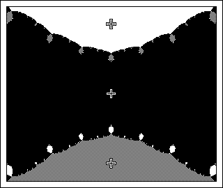

Julia Sets and the Mandelbrot Set
Newton's Method Basins of Attraction
Moving Roots
Here we move the roots of a cubic polynomial and watch how the basins of attraction change. Some changes are quite tame, others appear ... intricate.

Click the animation to stop.
Return to
Newton's Method Basins of Attraction
.